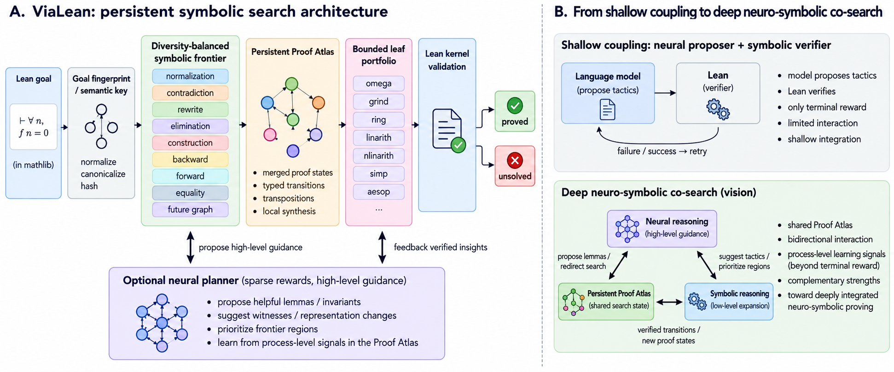

Builds ViaLean, a model-free Lean 4 prover that searches a persistent proof-state graph, and evaluates it on Lean miniF2F with Mathlib leaf closure.
Abstract
Formal theorem proving increasingly combines learned semantic guidance with verified symbolic execution. The quality of the symbolic search substrate therefore determines how much useful mathematical structure can be accumulated, reused, and exposed under a finite inference budget. We introduce ViaLean, a Lean4 prover that organizes symbolic reasoning as bounded exploration of a persistent proof-state graph. Its search preserves coverage across complementary reasoning modes, merges semantically equivalent goals, retains verified intermediate structure, and observes short symbolic futures before committing to a transition. On the complete miniF2F test split, the model-free configuration solves 122/244 problems (50.0% pass@1). Historical and recent symbolic reference points range from Lean's earlier tidy search to modern grind and SMT-backed verification, showing that proof-space organization remains a substantial source of capability. The same persistent state also provides a natural interface for neural–symbolic agents: neural reasoning can operate over verified regions and intermediate objects while Lean continuously expands and validates the local proof space.
Problem
Learned provers have improved Lean theorem proving quickly, but the symbolic search layer that turns a finite inference budget into finished proofs is still largely unexplored. The question is how much capability comes from better organization of the proof space alone.
Approach
ViaLean represents each proof attempt as a bounded Atlas: a graph whose vertices are semantic proof states and whose edges are typed, replayable transitions. Candidate generation is split into symbolic perspectives (normalization, rewriting, elimination, construction, forward closure, and others) and merged round-robin under per-perspective caps. Equivalent goals are merged, verified intermediate structure is kept across visits, and short symbolic futures are explored before committing to a branch. The Atlas also serves as an interface for neural agents, whose proposals Lean elaborates and verifies.

Figure 1: Persistent proof-space exploration in ViaLean . A Lean goal is canonicalized into a semantic state, expanded through a diversity-balanced symbolic frontier, accumulated in a persistent Proof Atlas, and closed through bounded verified solvers. The Atlas also forms a shared state for optional neural guidance over regions, intermediate objects, and future symbolic expansion.
Results
With no model, ViaLean solves 122/244 miniF2F-test problems (50.0% pass@1). This exceeds the reported Lean grind (32.4%), Dafny (38.9%) and Lean tidy (18.0%) results and matches DeepSeek-Prover-V1.5-RL at pass@32.